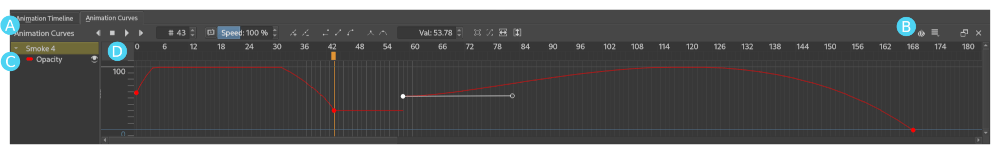

Animation Curves Docker¶
Krita's Animation Curves Docker allows artists to animate the values of some properties over time.
When animating a complex cut, it's not unusual to want to animate things that would be difficult or inefficient to do through drawing alone. In traditional pen-and-paper animation dating back to the 1920s, special lighting rigs and purpose-built devices like multiplane cameras were used to pull off special effects that changed animation forever! Likewise, Krita's Animation Curves docker allows us to animate more than just the lines on your canvas, such as a layer's opacity or the position, rotation and scale of a Transform Mask.
Because most things can be boiled down to numeric values (for example, opacity as a percentage or the position of a Transform Mask), and because computers are great with maths and automation, we can plot and visualize the change in values over time on a simple 2D graph. What's more, we can also draw lines and curves that show the computer how we want it to calculate the values in between each of our plotted keyframe values; a technique known as interpolation or tweening.
Overview¶
As shown in the image above, Krita's Animation Curves Docker can be thought of as different sections:
Utilities -- The left side of the toolbar gives animators quick access to all of the widgets that are critical to their workflow; transport controls (previous, play/pause, stop and next buttons), a frame counter, preview controls (speed and drop frames), buttons for adding and removing scalar keyframes, buttons for changing the interpolation mode and tangent mode of the selected keyframe, a box for setting the selected keyframe to a specific value, as well as buttons to help zoom and navigate the main graph view.
Settings -- While all of the high-traffic controls are presented directly, the right end of the toolbar also contains buttons for opening submenus for things like onion skins and settings that you can generally set and forget (for example, playback range, frame rate and autokey mode).
Channels List -- This area shows the various channels of the current layer that are currently being animated within the Animation Curves Docker. Each independent channel is associated with a unique color and its visibility within the graph view can be toggled by clicking on the eyeball icon.
Graph View -- Last but not least is the graph view, the big graph of values and times that we use to animate the value of parameters over time. When a keyframe is added to the current channel at the current time it will appear as a colored circle within the graph view. After clicking on the keyframe to select it, you can change the value by dragging the circle vertically or by entering a specific value into the value box on the toolbar. Similarly, you can change the time of the selected frame by dragging it horizontally. Finally, when the select keyframe is using bezier curve interpolation, selecting it will cause one or more curve handles to appear, which can be used to change the shape of the interpolation curve over time.
Animating Opacity¶
Starting with Krita 5, we can use the Animation Curves Docker to animate a layer's opacity and, with the help of a Transform Mask, its position, rotation, scale and shear.
警告
Though the design is pretty similar to the Animation Timeline Docker, the Animation Curves Docker may be a bit confusing or intimidating when you first open it, especially if you haven't done digital animation before.
Let's look first at animating a layer's opacity:
Say you want to animate something like an expanding cloud of dust that gradually becomes more transparent as it dissipates, or maybe a haunting ghost that seems to materialize out of thin air. These types of effects are pretty hard to get right by traditionally animated line drawings alone, and that's exactly where the Animation Curves Docker can step in.
After selecting the layer that you want to animate the opacity of, you need to select the frame time you want the opacity to start changing at by clicking somewhere on the frame timing header at the top of the graph view. Just like the Animation Timeline Docker, we can click and drag anywhere on the timing header to "scrub" across your animation and preview the results.
Next we create our first scalar keyframe by clicking on the add keyframe button on the docker's titlebar.
When you do this you'll notice two things happen. First, a new opacity channel will appear in the channels list on the left-hand side, next to a colored mark that's associated with the color of the keyframes and curves in the graph view. Second, a single keyframe will appear somewhere inside the graph view at the currently active time.
Of course it takes more than a single point to make a line or curve, so we have a little bit more work to do.
Just like our first keyframe, we need to make a second keyframe. Let's change the active frame time again (by clicking or scrubbing across the timing header) and add another keyframe at that new time (by clicking on the add keyframe button). As you'd expect, a second keyframe has appeared at the new time and a straight line has appeared between them.
With the active time still over our new keyframe, you'll find that as you change the opacity slider above the 圖層 the new keyframe that we've created will move up and down. Likewise, moving the keyframe up and down will cause the opacity at that time to change.
And just like that, when you press the play button you'll see the opacity of the layer animate over time!
警告
Unlike traditional methods, animating with curves can cause values to change across every frame of your animation. This can be more demanding on your machine and cause the caching process to take a little bit more time, as it calculates and stores each frame.
Before we move on, let's use interpolation curves instead of a straight line to change the timing and general feel of our opacity animation.
If you select the first keyframe (the one on the left-hand side) of your line segment and click on the bezier curve interpolation button in the utilities section of the titlebar, you'll notice that the keyframe will appear as a hollow circle on the graph view. That hollow circle is a handle, and by clicking on it and dragging in different directions you can change the arc of the curve between your two keyframes.
Similarly, you can like on the linear interpolation button to change your curve back into a line, or the constant button to turn off interpolation altogether, causing values to jump suddenly between keyframes.
備註
It's important to be aware of which animation frame is selected and active, as shown by the highlighted vertical line on the graph view. The keyframe that changes as you make adjustments elsewhere in the program will always be dependent on the active frame time!
Ok, it's a bit tough to put in writing... But it's not so bad once you get the hang of it!
Animating Transform Masks¶
Now let's talk a bit about how we can use a Transform Masks to animate our layer's position, rotation, scale and shear for "tweening" effects:
Animating a transform mask is a lot like animating opacity, but first we need to add a Transform Mask. (You can do this by  on the layer that you want to animate, and then .)
on the layer that you want to animate, and then .)
Transform Masks allow us to transform (translate, rotate, scale, or shear) the layer that they are attached to, without affecting its original position. And (starting with Krita 5) they also allow us to animate a layer's transform!
Much like how we animated opacity above, we need to add our first transformation keyframe. To do this, first make sure that you have your layer's Transform Mask selected, and then click on the add keyframe button at the top of the docker.
警告
Remember (as of Krita 5.0) we can only directly animate the opacity curve of a layer. In order to animate a layer's position, rotation, scale and shear, we need to attach a Transform Mask and animate it instead.
As such, when you have a regular paint layer selected the Animation Curves Docker will automatically add opacity keyframes, and when you have a transform mask selected the Animation Curves Docker will automatically add transformation keyframes.
Try to always keep in mind what type of layer you have selected when animating curves in Krita!
You should see a whole bunch of channels appear in the channels list, each with a unique name and color, as well as a number of corresponding keyframes.
If you want to you can edit these key frames directly in the graph view, but it's probably more intuitive to do it directly on the canvas. So now, when you use the Transform Tool on your Transform Masks, you should see the various keyframes of each channel moving around in the graph view to reflect the changes.
小訣竅
Animating a Transform Mask spawns a lot of channels but, depending on your goals, you may only want to work with a small number of them at a time. Hiding and soloing channels in the channels list can make it much easier to see and edit curves, especially since you can use the zoom to channel and zoom to curve buttons at the top of the docker to fit the graph view to the currently visible channels.
Navigating by click-dragging on the zoomable scrollbars and and values header (on the left-hand side of the graph view) can also really help with editing curves!
Finally, click or scrub to a different frame time, add another keyframe, and use the Transform Tool on the same Transform Mask again.
Press the play button and (after a little bit of caching) there you have it, a layer with an animated Transform Mask!
Controls¶
Channels List
 on Eye Icon: Toggle show/hide channel.
on Eye Icon: Toggle show/hide channel.Shift +
on Eye Icon: Solo channel.- : Open layer or channel context menu. [Reset Channel(s)]
Graph View
- : Select keyframe.
- + drag : Move frame(s).
- double-click : Select all keyframes at time.
Alt +
double-click : Select all keyframes of channel.Space +
: Pan.Space +
: Zoom.
Frame Timing Header
- : Move to time and select frame of the active layer.
- + drag : Scrub through time and select frame of the active layer.
Value Header
- + drag : Zoom graph view.
Space +
+ drag : Pan graph view.